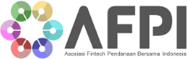
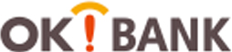

렌딩사이언스
주 메뉴

Tentang Kami

Siapa kita
Fintek Digital Indonesia dengan merek OK!P2P
didirikan pada June 2019 sebagai perusahaan
teknologi finansial (tekfin) yang memberikan
alternatif solusi keuangan
terpecaya yang menitik-beratkan pada perorangan
dan Usaha Kecil Menengah (UKM).
Di OK!P2P, kami menghubungkan
antara individu dan pengusaha di Indonesia yang
ingin mendapatkan pinjaman dan menghubungkan
mereka dengan bank ataupun institusi finansial.
Kami juga menyediakan platform pinjam meminjam
dengan proses online yang cepat
dan mudah yang memungkinkan pemilik dana untuk
membiayai berbagai kebutuhan finansial
guna keperluan bisnis kepada
usaha kecil menengah.
YANG MENJADI PERHATIAN KAMI
-
1
Kami ingin bisnis di Indonesia mendapatkan
benefit dari cara yang fleksibel dalam
mening-katkan arus kas mereka -
2
Kami menyediakan keuntungan menarik untuk
pemilik dana dan peminjam dana -
3
Kami melakukan analisa kredit yang ketat pada
usaha kecil menengah secara internal dan meng-
gunakan analisa pihak lain untuk memberikan
informasi yang dapat diandalkan untuk pemilik
dana dalam mengambil keputusan berinvestasi.
Selain itu kami juga bekerjasama dengan perusa-
haan penyedia akun escrow sehingga memberikan
rasa aman dan nyaman kepada pemilik dana -
4
Kami memberikan struktur biaya yang mudah
dan informasi menyeluruh di setiap pinjaman-
dengan perusahaan penyedia akun escrow
sehingga memberikan rasa aman dan nyaman
kepada pemilik dana
TUJUAN OK!P2P
Menjadi merek yang dikenal untuk solusi keuangan dan investasi yang menyeluruh Menyediakan edukasi produk keuangan dan menjembatani kesenjangan finansial pada konsumen dan usaha kecil menengah.
PARTNERS
